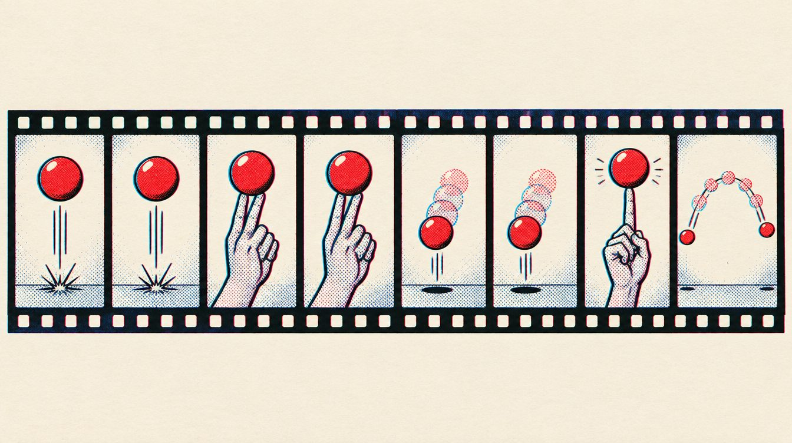

Craft term, verified
On ones, on twos

Animating on ones draws a new image for every frame, 24 per second. On twos, each drawing is held for two frames, 12 per second.
Twos read as weight, hesitation or hand-made texture. Ones read as fluency and speed. A film can switch per character and per moment.
Example: In the forest swing, Miles is drawn on twos to show his inexperience while Peter B. Parker is on ones for smoother movement.
Not this: A single fixed rate for every character would erase the contrast that makes the choice legible.
Where to look: The forest swing clip, 0:00 to 2:09, where both swing together. The first nine minutes never show them side by side.